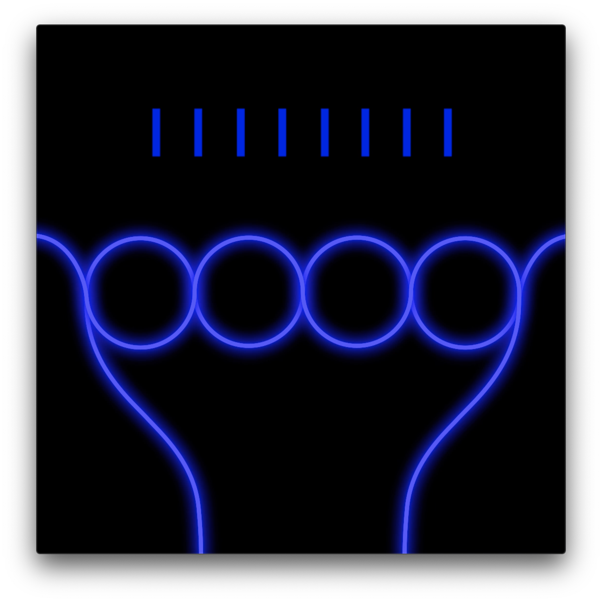
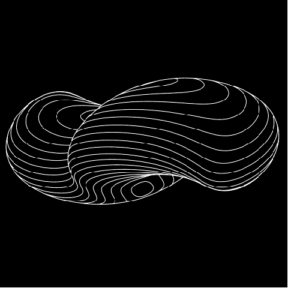
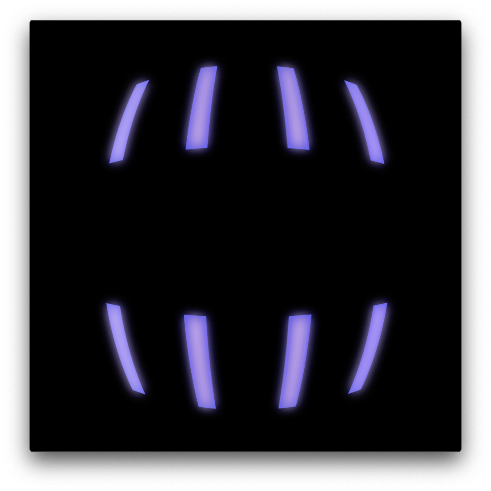
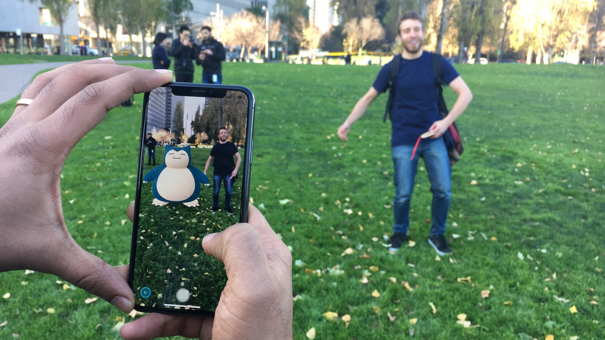
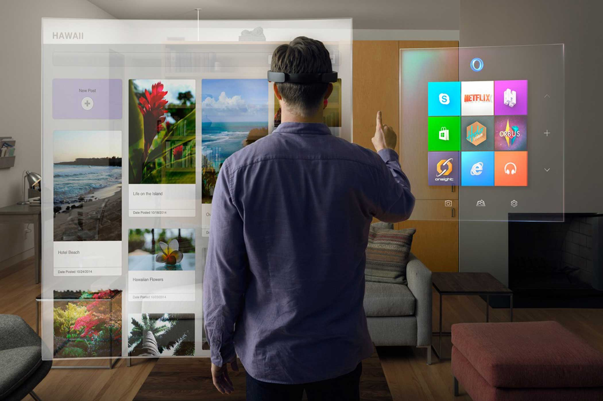

Hello,
Project 1 Research
Phase 1 - Aesthetic Choice
My choice of aesthetic is a combination of pen plotter, cyberpunk and Vapor-wave. It involves repetitive as well as abstract lines which have a subtle glow underneath them.
I chose this aesthetic because I have always been intrigued by the idea of repeated lines creating a pattern while also creating an illusion when their paths are modified and/or simulated. The glow underneath the lines represents a new development in my interests. I have been exploring a neon aesthetic for a few months now and have been trying to absorb parts of it into my personal work. (animations).
Visual Elements:
1. Repetitive Shapes.
2. Hatched Patterns.
3. Illusive alignment of designs.
4. Subtle Glow under different elements. (eg. Background of this page)
5. Overall dark and black background.
6. Text constricted to center of the page.
7. Not more than one kind of design on a particular page, very minimalistic approach.
8. Vibrant colors depending on content.
9. Very Basic shapes such as points, circles, lines, rectangles.
10. Gives feeling of being fresh and alive.
Interaction Dynamics:
1. Points creating ripple effect.( For e.g. The week one page )
2. Lines inducing a feeling of movement and warp through time.
3. Each Page changing it’s background animation to create a separate vibe.
4. Glowing.
5. Motion.



Research Phase 2 - Choice of Emergent Media
I have chosen to combine two emergent media for my project, them being:
Augmented Reality and Music Visualization.
Both of these medias have existed much longer than I thought which was quite surprising for me.
Augmented Reality:
The first Augmented Reality technology was developed in 1968 at Harvard when computer scientist Ivan Sutherland created an AR head-mounted display system. The early systems superimposed virtual information on the physical environment (e.g., overlaying a terrain with geolocal information), and allowed simulations that were used for aviation, military and industrial purposes.
Some of the biggest players in the augmented reality industry include:
Niantic - a google spin-off, creator of Pokémon Go gaming app.
Microsoft HoloLens – AR headset
Magic Leap. – AR Headset
The Tech industry has made strides in computer processing power over that last few decades, almost a trillion-fold increase since the first computer, available in our pockets today. This development has enabled the subsidization of powerful tools such as Augmented reality and has fueled the use of this tool for individual experimentation.
 

Music Visualization:
The first electronic music visualizer was the Atari Video Music introduced by Atari Inc. in 1976 and designed by Robert Brown. The idea was to create a visual exploration that could be implemented into a Hi-Fi stereo system.
As the music visualizer plays a song file, it reads the audio data in very short time slices (usually less than 20 milliseconds). The visualizer does a Fourier transform on each slice, extracting the frequency components, and updates the visual display using the frequency information.Now, due to the development of high processing power and smart algorithms, consumers are able to use several softwares to create a music visualization distinctive to their preferences.
Some of the most popular softwares are:
1. Renderforest Music Visualizer
2. Magic Music Visualizer
3. Adobe After Effects
4. WinAmp
5. Media Monkey
My proposal is to be able to use augmented reality to create a music visualizer that can be viewed through our smartphone cameras and have it react to music in real time. The visuals reacting to music would be tied back to the aesthetic described in Phase 1.
I feel that combining my aesthetic with these emergent medias would allow for the creation of something absolutely novel and mesmerizing such as an augmented reality music festival. Although the experience would not be exactly the same, this would allow for absolutely amazing visuals that can be achieved only on a screen.